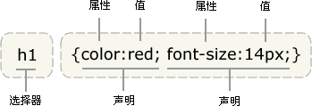

CSS 解析
CSS 语法
selector {declaration1; declaration2; ... declarationN }

语法是采用 BNF 格式描述的 （BNF：与上下文无关的语法）
ruleset
: selector [ ',' S* selector ]*
'{' S* declaration [ ';' S* declaration ]* '}' S*
;
selector
: simple_selector [ combinator selector | S+ [ combinator? selector ]? ]?
;
simple_selector
: element_name [ HASH | class | attrib | pseudo ]*
| [ HASH | class | attrib | pseudo ]+
;
class
: '.' IDENT
;
element_name
: IDENT | '*'
;
attrib
: '[' S* IDENT S* [ [ '=' | INCLUDES | DASHMATCH ] S*
[ IDENT | STRING ] S* ] ']'
;
pseudo
: ':' [ IDENT | FUNCTION S* [IDENT S*] ')' ]
;<span class="kwd"> </span>
以上方式用铁路图来解释就比较清楚了的。
Webkit CSS 解析器

图：解析 CSS
样式计算
构建呈现树时，需要计算每一个呈现对象的可视化属性。就是那个css属性是有效的。
- HTML 中的可视化属性 bgcolor center
- inline 样式元素 style=“”
- 样式表
<style></style> - 外部样式表
<link href="css/index.css" >
越近的优先级越高

Firefox 样式上下文树
规则的存储是延迟进行的。规则树不会在开始的时候就为所有的节点进行计算，而是只有当某个节点样式需要进行计算时，才会向规则树添加计算的路径。 不是覆盖，而是计算。
结构划分
结构中的属性都是继承的或非继承的。 继承属性如果未由元素定义，则继承自其父代。非继承属性（也称为“重置”属性）如果未进行定义，则使用默认值。
font，text
对规则进行处理以简化匹配
系统会根据选择器将 CSS 规则添加到某个哈希表中。 这些哈希表的选择器各不相同，包括 ID、类名称、标记名称等，还有一种通用哈希表，适合不属于上述类别的规则。
p.error {color:red}
#messageDiv {height:50px}
div {margin:5px}
<p class="error">an error occurred </p>
<div id=" messageDiv">this is a message</div>
table div {margin:5px}
从右边往左边匹配
层叠顺序
定义不止一个，就会出现问题，需要通过层叠顺序来解决
层叠的顺序为（优先级从低到高）
大范围，越近越高
权重计算
* {} /* a=0 b=0 c=0 d=0 -> specificity = 0,0,0,0 */
li {} /* a=0 b=0 c=0 d=1 -> specificity = 0,0,0,1 */
li:first-line {} /* a=0 b=0 c=0 d=2 -> specificity = 0,0,0,2 */
ul li {} /* a=0 b=0 c=0 d=2 -> specificity = 0,0,0,2 */
ul ol+li {} /* a=0 b=0 c=0 d=3 -> specificity = 0,0,0,3 */
h1 + *[rel=up]{} /* a=0 b=0 c=1 d=1 -> specificity = 0,0,1,1 */
ul ol li.red {} /* a=0 b=0 c=1 d=3 -> specificity = 0,0,1,3 */
li.red.level {} /* a=0 b=0 c=2 d=1 -> specificity = 0,0,2,1 */
#x34y {} /* a=0 b=1 c=0 d=0 -> specificity = 0,1,0,0 */
style="" /* a=1 b=0 c=0 d=0 -> specificity = 1,0,0,0 */
越详细，权重越高
使用规则树计算样式上下文
html代码
<html>
<body>
<div class="err" id="div1">
<p>
this is a <span class="big"> big error </span>
this is also a
<span class="big"> very big error</span> error
</p>
</div>
<div class="err" id="div2">another error</div>
</body>
</html>

图：上下文树
css代码
div {margin:5px;color:black}
.err {color:red}
.big {margin-top:3px}
div span {margin-bottom:4px}
#div1 {color:blue}
#div2 {color:green}

<html>
<body>
<div class="err" id="div1">
<!--margin:5px;color:black;color:red;color:blue -->
<p>
<!--p标签没有定义，但是color时可以继承的属性，color:blue -->
this is a <span class="big" > big error </span>
<!--big margin-top:3px;margin-bottom:4px -->
this is also a
<span class="big"> very big error</span> error
</p>
</div>
<div class="err" id="div2">another error</div>
<!--margin:5px;color:black;color:red;color:green -->
</body>
</html>